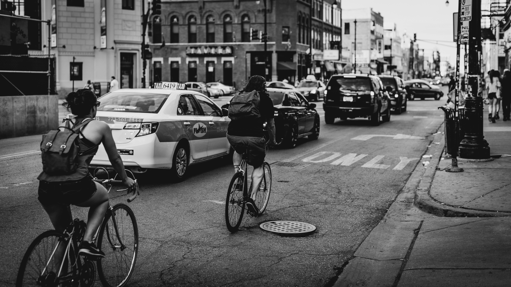
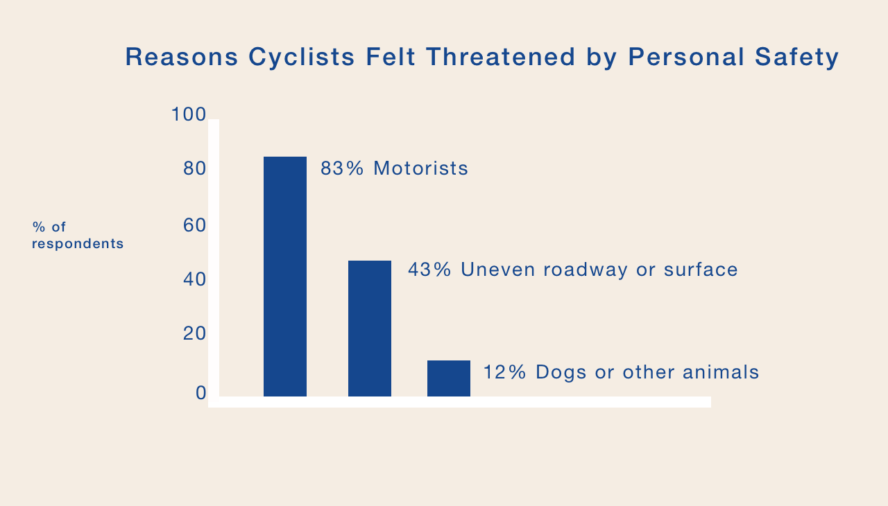
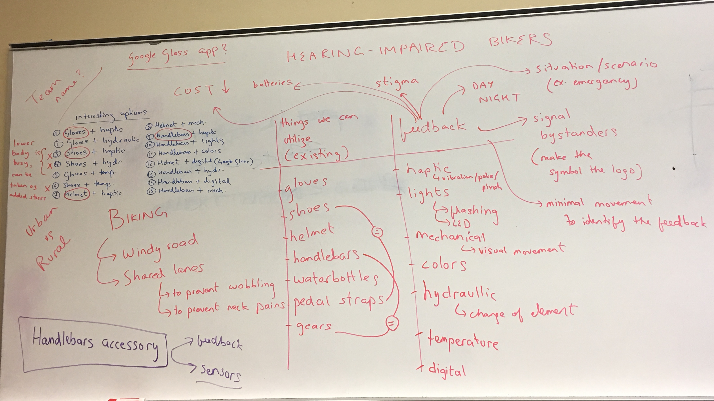
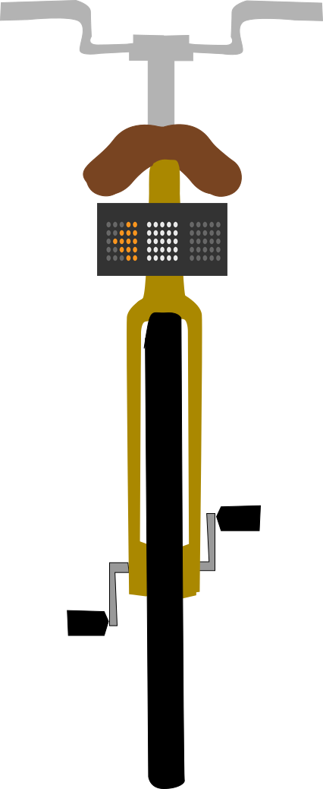

cyclika
Paving a sustainable path towards empowered biking.

Role: UX Researcher and Designer
Project Type: Group project in product design entered into the CHI Student Design Challenge
Team: Ankita Gupta, Navdeep Bagga, Marisa Xheka, Phuong-Cat Ngo
Timeline: September – January 2016
Software: Sketch, Adobe Photoshop, Final Cut Pro
Methods: Contextual Interviews, Sketching, Paper Prototyping, Usability Testing, Digital Prototyping
the community
We asked ourselves how we could improve bike safety for hearing-impaired individuals. Through our initial interviews and design process, we realized that these safety concerns significantly affect the habits of cyclists of diverse ages and experience levels, especially those who typically ride in busy, traffic-filled roads that lack bike lanes or similar protective infrastructure.
the opportunity

According to a 2012 survey by the US Department of Transportation, 83% of American cyclists feel a threat to their personal safety when motorists drive too fast or too close. Moreover, cyclists living in underserved communities with poor road conditions risk significantly higher rates of injury and fatality.
goals
We sought to develop a tool to empower all individuals to cycle confidently in traffic. By detecting and alerting users of vehicles approaching laterally and from behind, the tool would assist users by informing them of their surroundings and allowing them to take the necessary measures to ensure their safety.
methods
We conducted two rounds of contextual interviews to better understand the experience and concerns cyclists when cycling in traffic. Next, we brainstormed, sketched, and iterated upon digital prototypes after testing with target users.


the solution
We developed Cyclika, a system that alerts cyclists of vehicles in their environment. The system consists of two main parts. Users mount a small interface on the center of their handlebars. When a triangle lights up, it indicates that a vehicle is present in relation to the cyclist, represented by the circle at the top. The interface uses space and color to assist users in identifying how close an approaching vehicle is. The interface is visible in the cyclist’s peripheral vision, and can be used during the day and at night.

Cyclika detects vehicles with a radar mounted below the seat. Attached to the radar is a grid of LED lights that cyclists can use to indicate turns. Users can activate the rear lights using buttons on the handlebar.
View a video demonstration of the prototype below.
takeaways
Our team learned a lot about prioritization while developing Cyclika. While we were chiefly concerned during the design process with the product’s usability and efficacy of increasing safety for cyclists, we also aimed to increase accessibility by choosing materials that would keep cost low. While RADAR and LIDAR detection systems are becoming more affordable, their price is still relatively high. However, lower priced detection systems, like cameras, have a much smaller range of detection or other constraints that render them ineffective for our means.
Thus, it is important to prioritize when designing products that strive to be both usable and affordable. As user experience designers, we are here to represent the users. If a low cost is the most important factor driving a design, it is important to consider design choices that improve safety by utilizing less expensive materials.
Cyclika won second place in the 2016 Munger Case Competition, a challenge for graduate students across the university to develop solutions to improve sustainable living in Ann Arbor.